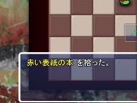

「道具」に対してできることは、すべてコマンドで表されています。
コマンドを選択して実行することで道具を使用できます。
以降では、いくつかの道具種別に共通する代表的なコマンドをいくつか紹介します。
| 投げる |
道具を前方に向かって投げます。 道具が敵や壁にあたると、何らかの効果が出ることがあります。 |
| 装備 |
道具を身につけます。 道具の種類別に装備箇所が違います。 |
| 置く |
足元に道具を置きます。 足元に既に道具がある場合は、代わりに「交換」が表示されます。 |
| 拾う |
足元の道具を拾うことができます。
|
| 交換 |
手持ちの道具1つと足元の道具を交換します。 足元の道具を拾い、選択した道具を足元に置く操作を1ターンで行えます。 |
| 説明 |
道具の詳しい説明とウンチクを見ることができます。 説明が複数ページにわたる場合は、方向キー左右でページを切り替えられます。 |
| 御霊 |
御霊を持っている装備品に表示され、その御霊の性能を表示します。 御霊を持っている道具は、合成の材料にすることで別の道具に御霊を移すことができます。 →道具の合成 |
修正値道具名の横に「+○○」「-○○」とついている場合、道具がその値の分だけ強化・弱体化していることを表しています。
呪いと信仰道具の中には、たまに神性の力や呪いの力がこもっていることがあります。これらが宿っている道具を使うと、その力によってよいことや悪いことがあります。 具体的には以下のとおりです。
信仰は、恩恵が何回か発動するとなくなります。 攻撃属性による状態異常敵が属性を持っている場合、その影響で道具に悪影響が出ることがあります。
未識別状態 ダンジョンに落ちている道具の中には、名前や修正値などがわからないものがあります。これらの道具の正体をなんとかして見極める必要があります。 一度見破ると、同名の道具全てが識別状態になります。 早めに正体を見破っておくに越したことはないでしょう。 正体を見破る代表的な方法は以下のとおりです。
※修正値・状態が未識別状態の場合、パラメータが未確定であることを()書きで表します。 |
濃縮合成同じ種類の「スペルカード」「飲み物」「食べ物」「本」を合成し、効果や使用回数を上げる合成を濃縮合成といいます。
御霊合成道具のの中には、長年使い込まれたり思いが込められたりして、魂が宿っているものがあります。この「御霊」を1つの装備品に宿らせることを御霊合成といいます。
|
飲み物のマテリアル混酒の箱は、飲み物に含まれている「春」「夏」「秋」「冬」の4つのマテリアルを混ぜあわせることでカクテルを作ります。飲み物に含まれているマテリアルは、「説明」で「マテリアル」のページを参照することで調べられます。 なお、未識別の飲み物は、正体にかかわらず全マテリアルが1として扱われます。 また、混酒の箱には「副材料」として、ランダムでいくつかのマテリアルが封入されています。 場合によっては、空の水筒1つで飲み物が作れることもあります。 カクテルの作成手順
|